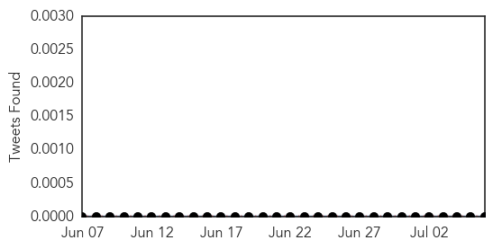
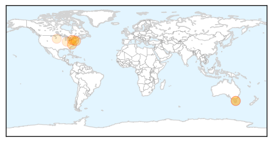
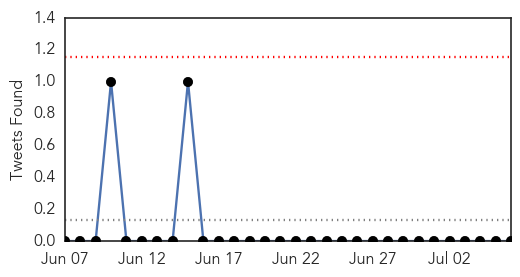

West Nile Virus
30-Day Web Trend
1 alerts, 0 warnings

30-Day Twitter Trend
3 alerts, 0 warnings

Article Locations
Article Confidences

Top Articles:
- 0.978
- West Nile Virus Alert Up in New York; NY Health Officials Share Prevention Tips
- 0.952
- Vaccine for West Nile Virus enters human clinical trials
- 0.951
- New York Residents reminded of Dangers of West Nile Virus
- 0.929
- New York health officials warn of mosquito risk
- 0.926
- Frequently asked questions about the West Nile Virus
- 0.869
- West Nile still a concern
- 0.549
- Mosquitoes are out for blood in central Indiana, so what can you do?
- 0.547
- Mosquito Control Grants to Prevent West Nile Virus
Top Tweets:
-
No tweets found for Jul 06, 2015
Influenza
30-Day Web Trend
0 alerts, 0 warnings

30-Day Twitter Trend
0 alerts, 0 warnings

Article Locations

Article Confidences

Top Articles:
- 1.000
- when are we most likely to catch viral diseases?
- 0.992
- MERS-positive man arrives from Saudi
- 0.988
- Preventing the Hong Kong flu-INSIDE Korea JoongAng Daily
- 0.963
- Narcolepsy link to GSK’s influenza vaccine
- 0.962
- Experts say avian flu haven’t affectedbirds in Alaska
- 0.960
- donga.com[English donga]
- 0.956
- Hutt Valley District Health Board nurses lag behind other staff for flu shots
- 0.882
- Parliament calls for urgent steps to contain Avian flu
- 0.855
- Netherlands Avian Flu Resulted from Four Separate Introductions
- 0.735
- Western Magazine
- 0.612
- Avian flu hasn't reached Alaska birds yet, but it could
- 0.501
- Sick doctors admit to spreading infections at work
Top Tweets:
-
No tweets found for Jul 06, 2015